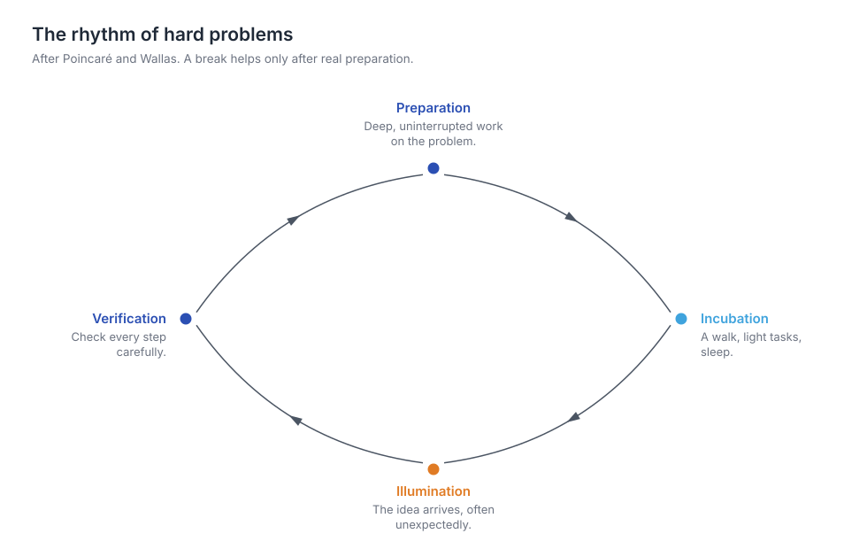

Guides · Wellbeing
Focus, rest and the unconscious work of research
Hard problems are solved in alternation. Concentrated work, then a step back while the mind keeps working, then new insight. Protect deep focus, accept that your time is finite, use breaks deliberately, and sleep on hard problems.
Path · Taking care of your mind · step 3 of 3

Many mathematicians and scientists describe the same experience: after days of fruitless work on a problem, the solution appears during a walk, in the shower or on waking. This is not magic and not laziness. It is part of how the mind solves hard problems, and you can organise your work around it.
Poincaré on the bus#
In Science and Method (1908), Henri Poincaré described working for two weeks on a problem about the functions he later called Fuchsian. He then left for a geological excursion and forgot mathematics. As he stepped onto a bus in Coutances, the key idea came to him, with full certainty. Back home, he checked it at leisure.
Poincaré insisted on two points. The sudden insight came only after long, intense conscious work. And it still had to be verified carefully, because such insights are sometimes wrong.
The psychologist Graham Wallas turned these accounts into four stages of creative thinking in 1926: preparation, incubation, illumination and verification.
What research shows#
- Incubation is real. A meta-analysis by Sio and Ormerod in Psychological Bulletin (2009) found a positive effect of setting a problem aside before returning to it.
- Preparation comes first. The effect was larger after longer periods of work on the problem. A break helps only if you have really engaged with it.
- Light activity can beat total rest. For some kinds of problems, a break filled with an undemanding task, such as walking or tidying, gave a stronger effect than doing nothing. A break filled with demanding work gave a smaller effect.
- Sleep consolidates learning. A large body of research shows that sleep after learning helps memory and the reorganisation of what was learned. Sleeping on a hard problem is good advice.
Protect deep focus#
Incubation only works after real preparation, and real preparation needs uninterrupted attention.
- Block time for deep work. Two to four hours without email, messages or meetings, several days a week.
- Limit switching. Research by Sophie Leroy (2009) found that when people switch tasks, part of their attention stays on the previous one. She called it attention residue. Finish a session at a clear stopping point before switching.
- Write down where you are. At the end of a session, note the open question and the next step. It frees your mind and makes the next start easy.
Accept that time is finite#
The writer Oliver Burkeman argues in Four Thousand Weeks (2021) that most productivity advice promises a day when you will finally be on top of everything, and that this day never comes. A life of about four thousand weeks is too short to do everything. Choosing what to neglect is part of doing anything well. For research, this means:
- a small number of active projects at once,
- accepting that some good ideas will never be pursued,
- judging a week by whether the important work moved, not by how many tasks were done.
A working rhythm#
- Prepare. Work on the problem with full attention: examples, attempts, notes.
- Step away. Walk, exercise, do a simple task. Keep the problem loosely in mind, without forcing it.
- Sleep on it. Review the problem briefly in the evening, and write down what comes to mind in the morning.
- Return and verify. Check every insight carefully, as Poincaré did.
Do not mistake avoidance for incubation. A break after hours of real work is incubation. Weeks away from a problem you never really started is not.
Checklist#
- I have protected blocks of deep work in my week.
- I end each work session by writing the next step.
- I take real breaks after intense work, often with light activity.
- I sleep enough, especially when working on a hard problem.
- I have a small number of active projects and accept leaving some ideas aside.
- I verify every sudden insight before trusting it.
Summary#
- Hard problems are solved in alternation: preparation, incubation, illumination, verification.
- Incubation works after real preparation, and light activity or sleep helps.
- Protect deep focus and limit task switching.
- Time is finite: choose few projects and let some ideas go.
Further reading#
- Ut Na Sio and Thomas C. Ormerod, Does incubation enhance problem solving? A meta-analytic review, Psychological Bulletin 135 (2009).
- Henri Poincaré, Science and Method (1908), chapter on mathematical invention.
- Oliver Burkeman, Four Thousand Weeks: Time Management for Mortals (2021). His essay Life's Short. So Stop Trying to Perfect It. appeared in The Free Press on Substack in 2024.
Discussion
Questions, corrections and your own experience are welcome. Comments live in the forum, on GitHub Discussions, with Markdown and LaTeX.